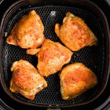

Mustard Chicken Recipe

Mustard Chicken recipe for air fryer.
Ingredients
- 1.5 lb Boneless Skinless Chicken Thighs
- 2 tbsp Dijon Mustard
- 1 tbsp Honey
- 1 tsp Salt
- 1/2 tsp black pepper
Steps
- Combine Dijon Mustard, Honey, salt, and black pepper in small bowl. Stir to combine thoroughly.
- Place chicken thighs in resealable bag and coat with mixture from step 1
- Marinate chicken thighs in refrigerator for 15 minutes minimum, or up to 24 hours.
- Set air fryer to roast at 390°F for 20 minutes (27 minutes for double recipe, both sides air fryer). Flip chicken halfway through cooking.
These instructions may or may not be correct.
Go Home